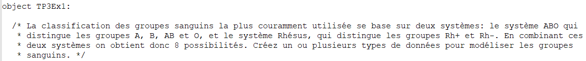
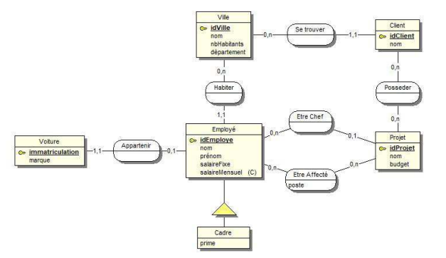

Bilan des apprentissages réalisés au semestre 5
Informations générales
Diplôme préparé : BUT 3
Informatique
Établissement : IUT de
Montpellier-Sète
Formation initiale ou alternance : alternance
Si alternance : dans le domaine public, création
d’un site de création/gestion de contrat et d’administration, 4 septembre 2023
Si formation initiale : court descriptif de la
SAÉ :
Activités réalisées
Décrire les activités réalisées pendant vos périodes
en entreprise ou en cours et les mettre en relation avec le référentiel du BUT Informatique. Cette
partie constitue le cœur de la démarche portfolio.
Pour chaque mission/projet réalisé, décrire les activités
et y associer les apprentissages critiques (AC) et les composantes essentielles (CE) que ces activités vont
ont permis de travailler, voire d’acquérir.
Pensez à joindre une trace de l’activité pour chaque AC et CE
mentionnés.
Mission/projet 1
TP de programmation fonctionnel en Scala, implementer un système permettant de
définir la compatibilité des groupes sangins entre eux. Choisir la structure de donnée
adapté.
Nom de la composante critique associée :
- AC31.01 | Choisir et implémenter les architectures adaptées :
Expertise
Exemple avec une trace
Nom de la composante essentielle associée :
- CE1.01 | en respectant les besoins décrits par le client : Expertise
Exemple concret de situation où la compétence a été mise en
œuvre. Si possible, joindre une trace.

Mission/projet 2
TP du cours qualité de développement. Faire une application console sur
des Tamagoshis. La façon dont l’implementation est faite est totatlement libre :
Nom de la composante essentielle associée :
- CE1.01 | en respectant les besoins décrits par le client : Expertise
- CE1.03 | en appliquant les principes algorithmiques : Expertise
- CE1.04 | en veillant à la qualité du code et à sa documentation
: Expertise
- CE1.06 | en choisissant les ressources techniques appropriées :
Expertise
Mission/projet 3
Alternance et Stage. Quand je suis arrivé dans mon stage le début de la
programmation du logiciel avait déjà commencé. J’ai donc du apprendre le fonctionnement
de l’application existante puis y ajouter des nouvelles fonctionnalités. Il m’est arrivé
la même chose lorsque je suis parti du stage puis revenu en alternance en septembre 2023 l’application
avait évolué, j’ai du la réapprendre. J’ai du développer les
fonctionnalité demandé par le client. Travaillant en équipe j’ai aussi du respecter les
principes algorithmiques et la qualité du code. Le projet de mon alternance se fait en équipe de 7
travaillant en méthode agile, avec des réunions régulières
Nom de la composante critique associée :
- AC31.02 | Faire évoluer une applicaton existante : Expersise
Nom de la composante essentielle associée :
- CE1.01 | en respectant les besoins décrits par le client : Expertise
- CE1.03 | en appliquant les principes algorithmiques : Expertise
- CE1.04 | en veillant à la qualité du code et à sa documentation
: Expertise
- CE1.06 | en choisissant les ressources techniques appropriées :
Expertise
- CE6.01 | En inscrivant sa démarche au sein d’une équipe
pluridisciplinaire
- CE6.04 | En développant une communication efficace et collaborative
Mission/projet 4
TP de base de données. Dans les tps de base de données nous devons
ajouter de nouvelles données, modifier les structures existantes, faire des requêtes. Tout ça
dans un environnement avec des données et structures déjà présentes :
- AC31.03 | Intégrer des solutions dans un environnement de production :
Expertise
- AC31.02 | Faire évoluer une applicaton existante : Expertise
Nom de la composante essentielle associée :
- CE1.01 | en respectant les besoins décrits par le client : Expertise
Les énoncés
- CE2.01 | en formalisant et modélisant des situations complexes :
Expertise

|
|
|
|
Mission/projet 5
TP du cours qualité algorithmique. Création et optimisation
d’un algorithme permettant de trouver une solution pour le jeux des reines.
Nom de la composante critique associée :
- AC32.01 | Anticiper les résultats de diverses métriques (temps
d'exécution, occupation mémoire, montée en charge...) : Expertise
- AC32.02 | Profiler, analyser et justifier le comportement d'un code
existant : Expertise
Nom de la composante essentielle associée :
- CE1.06 | en choisissant les ressources techniques appropriées :
Expertise
- CE2.02 | en recensant les algorithmes et les structures de données
usuels : Expertise
- CE2.03 | en s'appuyant sur des schémas de raisonnement :
Expertise
- CE2.04 | en justifiant le choix et validant les résultats :
Expertise
|
|
|
|
|
Mission/projet 6
TP du cours programmation multimédia. Implementer la logique,
développer (ou étendre) l’implémentation d’un jeu de type
casse-brique.
Nom de la composante critique associée :
- AC31.02 | Faire évoluer une applicaton existante : Expertise
- AC32.03 | Choisir et utiliser des bibliothèques et méthodes
dédiées au domaine d'application (imagerie, immersion, intelligence artificielle, jeux
vidéo, parallélisme, calcul formel...) : Fort

Nom de la composante essentielle associée :
- CE1.01 | en respectant les besoins décrits par le client :
Expertise
- CE1.06 | en choisissant les ressources techniques appropriées :
Expertise
|
Mission/projet 7
Cours de communication veille informationnel.
Nom de la composante critique associée :
- AC36.01 | Organiser et partager une veille technologique et informationnelle :
Fort
Cf. rendu de l’analyse de veille et l’oral
Nom de la composante essentielle associée :
- CE6.01 | En inscrivant sa démarche au sein d’une équipe
pluridisciplinaire : Expertise
- CE6.04 | En développant une communication efficace et collaborative :
Fort
Travail en équipe de 3
Mission/projet 8
TD cours management d’un équipe. Réflexion sur la Conduite du
Changement via l'Informatique
Nom de la composante critique associée :
- AC36.02 | Identifier les enjeux de l'économie de l'innovation
numérique : Moyen
- AC36.03 | Guider la conduite du changement informatique au sein d'une
organisation : Moyen
- AC36.04 | Accompagner le management de projet informatique : Moyen
Nom de la composante essentielle associée :
- CE6.02 | En accompagnant la mise en œuvre des évolutions informatiques :
Moyen
- CE6.03 | En veillant aux respects des contraintes juridiques : Moyen
Rendu du TD
Mon point de vue sur la formation
Ai-je réalisé les objectifs fixés par le programme
national ? Si ce n’est pas le cas, quels sont les AC et les composantes essentielles sur lesquelles je
dois travailler ?
Effectivement, il y a quelques AC et composantes essentielles sur lesquelles
j’estime n’avoir pas assez travaillé, ou ne pas avoir étudié en condition
réal autre que la théorie :
- AC32.03 | Choisir et utiliser des bibliothèques et méthodes
dédiées au domaine d'application (imagerie, immersion, intelligence artificielle, jeux
vidéo, parallélisme, calcul formel...)
- AC36.02 | Identifier les enjeux de l'économie de l'innovation
numérique
- CE6.02 | En accompagnant la mise en œuvre des évolutions
informatiques
- CE6.03 | En veillant aux respects des contraintes juridiques
Qu’ai-je mis en pratique de ma formation en entreprise, en TD ou pendant la
SAÉ ?
Toutes les AC ou composantes essentielles recensé sur les missions/projets
(d’entreprise ou TD) de ce document.
Ai-je rencontré des difficultés particulières, des situations
problématiques ? Si oui, lesquelles ? Comment les ai-je gérées ?
Oui, il m’arrive souvent de rencontrer des situations dont je ne mettais jamais
confronté auparavant. Comme souvent, la structure de données la mieux adaptée pour mon
problème ou bien appliquer le bon principe algorithmique de la solution envisagé. La plupart du
temps, je regarde ce qui se fait sur Internet. Souvent, plusieurs personnes ont déjà
été confrontées à ce problème et partage leurs solutions. J’essaye de
prendre ou de mixer les solutions qui me conviennent le mieux.
Qu’est-ce qui m’a plu particulièrement ?
Les principales compétences qui m’ont plus le plus sont les
compétences réalisées et optimiser. Ce que je préfère, c’est, analyser
les besoins du client et réfléchir à la meilleure implémentation possible, puis
l’optimiser.
Qu’est-ce que j’ai moins aimé, qu’est-ce qui m’a paru
difficile ?
Les compétences accompagnées la misent en œuvre des
évolutions informatiques et veiller aux respects des contraintes juridiques. Parce que nous avons vu ces
compétence qu’en théorie, en TD, mais nous n'avons pas pu l’appliquer dans une
situation réelle. Je n’ai pas non plus eu l’occasion de travailler celles-ci dans le cadre de
mon alternance.
Quel est mon projet post-BUT ?
Mon projet post-BUT est de ne pas continuer les études et d’être
salarié en développement web.
Dans quelle mesure cette formation a-t-elle fait évoluer mon
projet ?
Le BUT Informatique m’a aidé a être un futur développeur web
grace aux apprentissages des fondements théoriques, langages de programmation, bases de données,
conception, projets pratiques, alternance.
La formation offre une base complète en informatique, en mettant
particulièrement l'accent sur le développement, ce qui peut contribuer au projet de devenir
développeur web.